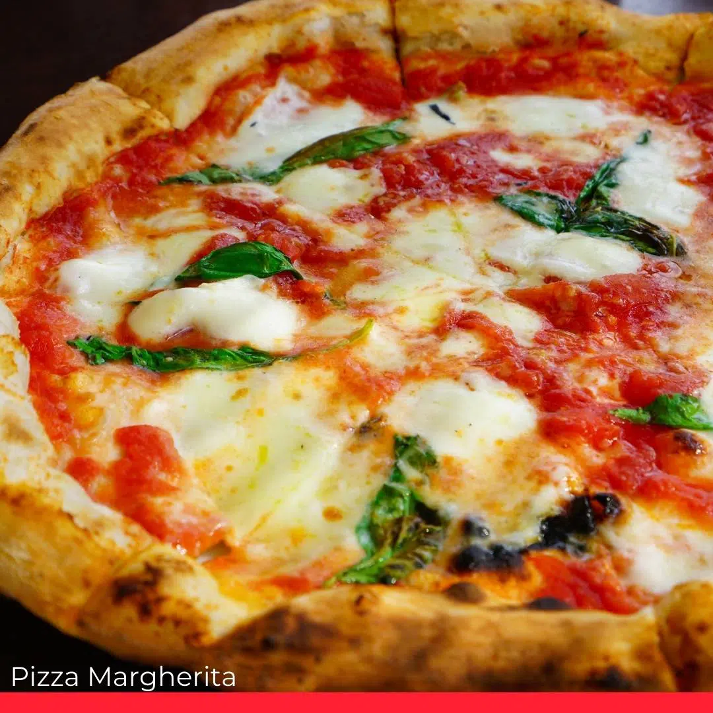
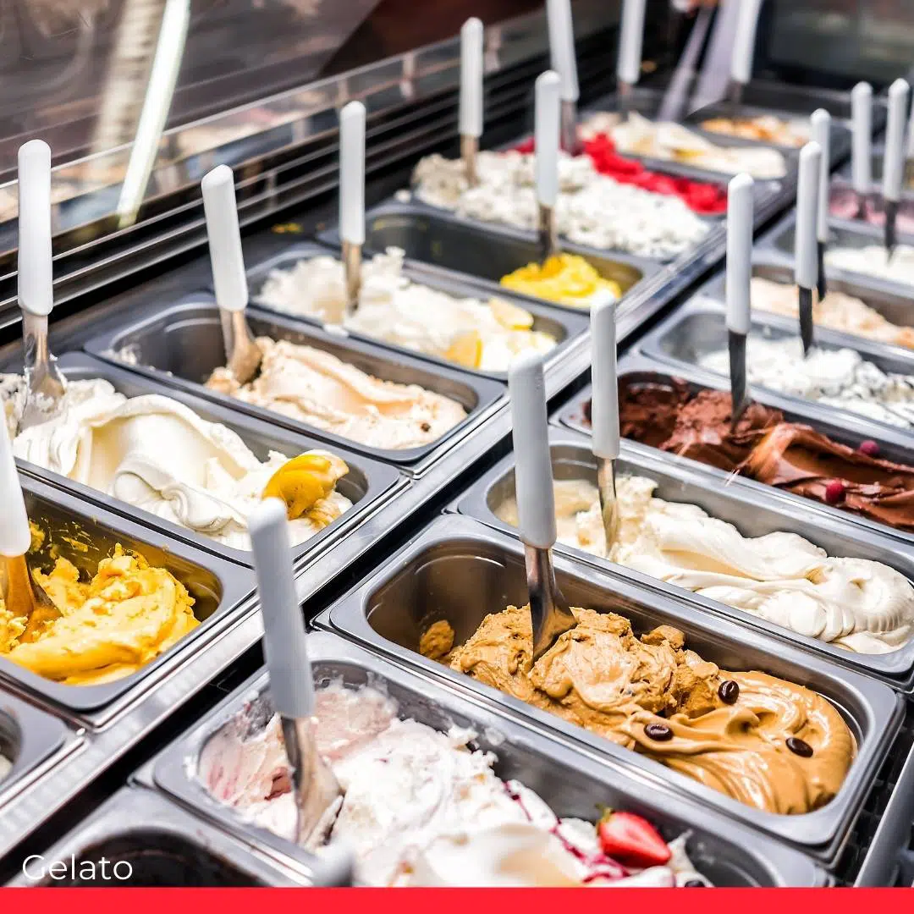

|  |  |
 |
pizza is one of my favourite italian dish and can have many different toppings that can elevate the taste. |
gnocchi is also my favourite italian dish that is made from potato but has a pasta like taste with slight more chewiness |
gelato is my favourite italian dessert that has a well-balanced intesity of flavours and creaminess |